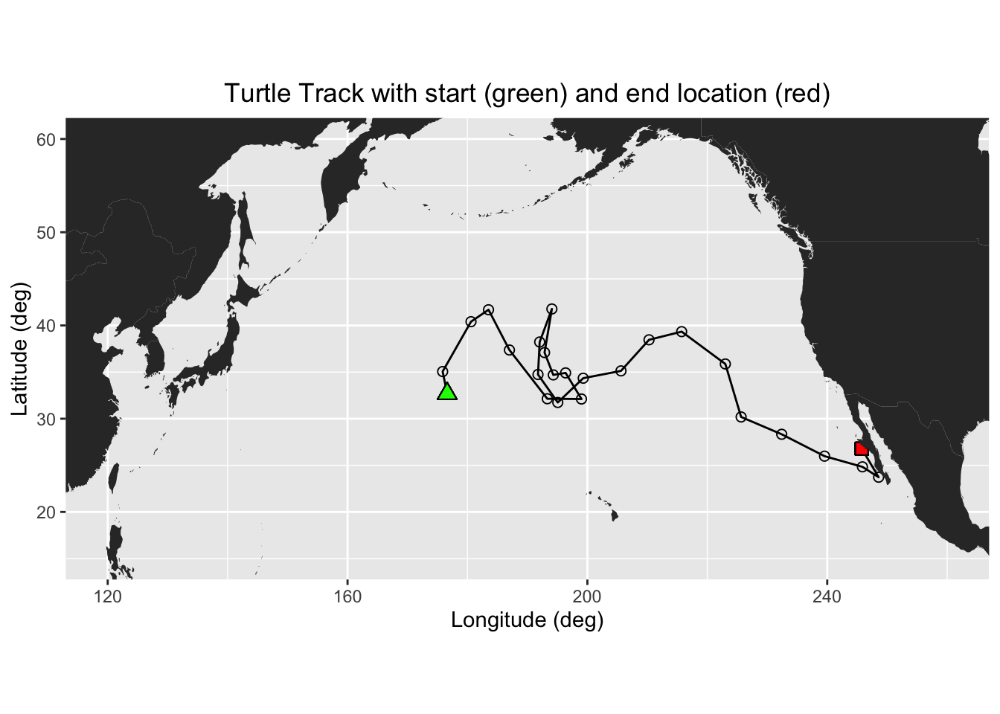

# Function to check if pkgs are installed, and install any missing pkgs
pkgTest <- function(x)
{
if (!require(x,character.only = TRUE))
{
install.packages(x,dep=TRUE,repos='http://cran.us.r-project.org')
if(!require(x,character.only = TRUE)) stop(x, " :Package not found")
}
}
# Create list of required packages
list.of.packages <- c("rerddap", "plotdap", "parsedate", "ggplot2", "rerddapXtracto",
"date", "maps", "mapdata", "RColorBrewer","viridis")
# Create list of installed packages
pkges = installed.packages()[,"Package"]
# Install and load all required pkgs
for (pk in list.of.packages) {
pkgTest(pk)
}Matchup satellite data to track locations
Matchup Satellite data to track locations
Objective
This tutorial will demonstrate how to extract satellite data around a set of points defined by longitude, latitude, and time coordinates, like those produced by an animal telemetry tag, and ship track, or a glider track.
The tutorial demonstrates the following techniques
- Importing track data in csv file to data frame
- Plotting the latitude/longitude points onto a map
- Using the
rerddapXtracofunction to extract satellite data from an ERDDAP data server along a track - Plotting the satellite data onto a map
Datasets used
Chlorophyll a concentration, the European Space Agency’s Ocean Colour Climate Change Initiative (OC-CCI) Monthly dataset v6.0
We’ll use the European Space Agency’s OC-CCI product (https://climate.esa.int/en/projects/ocean-colour/) to obtain chlorophyll data. This is a merged product combining data from many ocean color sensors to create a long time series (1997-present).
Loggerhead turtle telemetry track data
The turtle was raised in captivity in Japan, then tagged and released on 05/04/2005 in the Central Pacific. Its tag transmitted for over 3 years and went all the way to the Southern tip of Baja California. This data set has been subsampled to reduce the data requests needed for this tutorial from over 1200 to 25. The track data are stored in the data folder in this project folder.
Install and load packages
Import the track data into a data frame
# Import csv file into a data frame
turtle_df <- read.csv("../data/25317_05_subsampled.dat")
# Show 3 rows from the data frame
head(turtle_df,3) mean_lon mean_lat year month day
1 176.6194 32.67873 2005 5 4
2 175.8609 35.05773 2005 6 23
3 180.5926 40.40576 2005 8 12Plot the track on a map
# Download world map
mapWorld <- map_data("world", wrap=c(0,360))
# Map turtle tracks
ggplot(turtle_df, aes(mean_lon,mean_lat)) +
geom_path(group=1)+
geom_point(aes(x=mean_lon,y=mean_lat), pch=1, size=2 )+
geom_point(aes(x=mean_lon[1],y=mean_lat[1]),fill="green", shape=24, size=3)+
geom_point(aes(x=mean_lon[length(mean_lon)],y=mean_lat[length(mean_lat)]), shape=22, size=3, fill="red")+
geom_polygon(data = mapWorld, aes(x=long, y = lat, group = group)) +
coord_fixed(xlim = c(120,260),ylim = c(15,60))+
labs(x="Longitude (deg)", y="Latitude (deg)", title="Turtle Track with start (green) and end location (red)")+
theme(plot.title=element_text(hjust=0.5), aspect.ratio=1/2)
In this exercise, two different ways of extracting data from ERDDAP data server along a track of xyt points are demonstrated:
- Using the
rerddapXtractopackage which was written specifically for this task - By manually constructing a URL with the data data request
Extracting XYT data using the rerddapXtracto package
We will use the `rxtracto function of the rerddapXtracto package, which was written to simplify data extraction from ERDDAP servers.
Let’s use data from the monthly product of the OC-CCI datasets.
The ERDDAP URL to the monthly product is below:
https://oceanwatch.pifsc.noaa.gov/erddap/griddap/esa-cci-chla-monthly-v6-0
A note on dataset selection
We have preselected the dataset because we know it will work with this exercise. If you were selecting datasets on your own, you would want to check out the dataset to determine if its spatial and temporal coveragea are suitable for your application. Following the link above you will find:
The latitude range is -89.97916 to 89.97916 and the longitude range is 0.020833 to 359.97916, which covers the track latitude range of 23.72 to 41.77 and longitude range of 175.86 to 248.57.
The time range is 1997-09-04 to 2023-12-01 (at the day of this writing), which covers the track time range of 2005-05-04 to 2008-08-16.
You should also note the name of the variable you will be downloading. For this dataset it is “chlor_a”
# Set dataset ID
dataset <- 'esa-cci-chla-monthly-v6-0'
# Get data information from ERDDAP server
dataInfo <- rerddap::info(dataset, url= "https://oceanwatch.pifsc.noaa.gov/erddap")Examine metadata
rerddap::info returns the metadata of the requested dataset. We can first understand the attributes dataInfo includes then examine each attribute.
# Display the metadata
dataInfo<ERDDAP info> esa-cci-chla-monthly-v6-0
Base URL: https://oceanwatch.pifsc.noaa.gov/erddap
Dataset Type: griddap
Dimensions (range):
time: (1997-09-04T00:00:00Z, 2023-12-01T00:00:00Z)
latitude: (-89.97916666666666, 89.97916666666667)
longitude: (0.020833333333314386, 359.97916666666663)
Variables:
chlor_a:
Units: mg m-3
chlor_a_log10_bias:
chlor_a_log10_rmsd:
MERIS_nobs_sum:
MODISA_nobs_sum:
OLCI_A_nobs_sum:
OLCI_B_nobs_sum:
SeaWiFS_nobs_sum:
total_nobs_sum:
VIIRS_nobs_sum: # Display data attributes
names(dataInfo)[1] "variables" "alldata" "base_url" # Examine attribute: variables
dataInfo$variables variable_name data_type actual_range
1 chlor_a float
2 chlor_a_log10_bias float
3 chlor_a_log10_rmsd float
4 MERIS_nobs_sum float
5 MODISA_nobs_sum float
6 OLCI_A_nobs_sum float
7 OLCI_B_nobs_sum float
8 SeaWiFS_nobs_sum float
9 total_nobs_sum float
10 VIIRS_nobs_sum float # Distribute attributes of dataInfo$alldata
names(dataInfo$alldata) [1] "NC_GLOBAL" "time" "latitude"
[4] "longitude" "chlor_a" "MERIS_nobs_sum"
[7] "MODISA_nobs_sum" "OLCI_A_nobs_sum" "OLCI_B_nobs_sum"
[10] "SeaWiFS_nobs_sum" "VIIRS_nobs_sum" "chlor_a_log10_bias"
[13] "chlor_a_log10_rmsd" "total_nobs_sum" Extract data using the rxtracto function
First we need to define the bounding box within which to search for coordinates. The rxtracto function allows you to set the size of the box used to collect data around the track points using the xlen and ylen arguments. The values for xlen and ylen are in degrees. For our example, we can use 0.2 degrees for both arguments. Note: You can also submit vectors for xlen and ylen, as long as they are the same length as xcoord, ycoord, and tcoord if you want to set a different search radius around each track point.
# Set the variable we want to extract data from:
parameter <- 'chlor_a'
# Set xlen, ylen to 0.2 degree
xlen <- 0.2
ylen <- 0.2
# Create date column using year, month and day in a format ERDDAP will understand (eg. 2008-12-15)
turtle_df$date <- as.Date(paste(turtle_df$year, turtle_df$month, turtle_df$day, sep="-"))
# Get variables x, y, t coordinates from turtle track data
xcoords <- turtle_df$mean_lon
ycoords <- turtle_df$mean_lat
tcoords <- turtle_df$date
# Extract satellite data using x, y, t coordinates from turtle track data
chl_track <- rxtracto(dataInfo,
parameter=parameter,
xcoord=xcoords, ycoord=ycoords,
tcoord=tcoords, xlen=xlen, ylen=ylen)Check the output of the rxtracto function
# Check all variables extracted using rxtracto
chl_track$`mean chlor_a`
[1] 0.26779765 0.12073122 0.30777924 0.31780368 0.28884829 0.36146353
[7] 0.22923882 0.11644071 0.09268904 0.05536651 0.18447913 0.22765385
[13] 0.23869553 0.24669819 0.35838123 0.09624625 0.12024124 0.11400095
[19] 0.10017463 0.09397742 0.08515869 0.06913812 0.14883095 0.51560753
[25] 0.65806269
$`stdev chlor_a`
[1] 0.032191816 0.007231171 0.036716832 0.041052758 0.027952051 0.053364804
[7] 0.024394244 0.007282479 0.003880810 0.001490017 0.040774493 0.025363286
[13] 0.014782180 0.013523678 0.036640145 0.004842596 0.004098601 0.003910613
[19] 0.003537558 0.005928580 0.007001476 0.004942355 0.011980482 0.099209610
[25] 0.149563991
$n
[1] 36 36 36 27 36 30 36 36 30 30 30 30 36 30 36 30 36 36 36 30 36 30 36 36 36
$`satellite date`
[1] "2005-05-01T00:00:00Z" "2005-07-01T00:00:00Z" "2005-08-01T00:00:00Z"
[4] "2005-10-01T00:00:00Z" "2005-12-01T00:00:00Z" "2006-01-01T00:00:00Z"
[7] "2006-03-01T00:00:00Z" "2006-05-01T00:00:00Z" "2006-06-01T00:00:00Z"
[10] "2006-08-01T00:00:00Z" "2006-09-01T00:00:00Z" "2006-11-01T00:00:00Z"
[13] "2007-01-01T00:00:00Z" "2007-02-01T00:00:00Z" "2007-04-01T00:00:00Z"
[16] "2007-06-01T00:00:00Z" "2007-07-01T00:00:00Z" "2007-09-01T00:00:00Z"
[19] "2007-11-01T00:00:00Z" "2007-12-01T00:00:00Z" "2008-02-01T00:00:00Z"
[22] "2008-04-01T00:00:00Z" "2008-05-01T00:00:00Z" "2008-07-01T00:00:00Z"
[25] "2008-08-01T00:00:00Z"
$`requested lon min`
[1] 176.5194 175.7609 180.4926 183.4102 186.8997 193.2152 198.9158 196.2679
[9] 194.2116 192.7545 193.9788 191.9444 191.6600 194.9631 199.2066 205.5050
[17] 210.1805 215.6225 222.9073 225.5386 232.3064 239.4530 245.7716 248.4710
[25] 245.6579
$`requested lon max`
[1] 176.7194 175.9609 180.6926 183.6102 187.0997 193.4152 199.1158 196.4679
[9] 194.4116 192.9545 194.1788 192.1444 191.8600 195.1631 199.4066 205.7050
[17] 210.3805 215.8225 223.1073 225.7386 232.5064 239.6530 245.9716 248.6710
[25] 245.8579
$`requested lat min`
[1] 32.57873 34.95773 40.30576 41.58480 37.26623 32.03793 32.01126 34.81224
[9] 34.59661 36.99175 41.66933 38.12796 34.63858 31.63964 34.24324 35.02771
[17] 38.36083 39.23749 35.76793 30.08540 28.22859 25.88108 24.73662 23.62417
[25] 26.68177
$`requested lat max`
[1] 32.77873 35.15773 40.50576 41.78480 37.46623 32.23793 32.21126 35.01224
[9] 34.79661 37.19175 41.86933 38.32796 34.83858 31.83964 34.44324 35.22771
[17] 38.56083 39.43749 35.96793 30.28540 28.42859 26.08108 24.93662 23.82417
[25] 26.88177
$`requested z min`
[1] NA NA NA NA NA NA NA NA NA NA NA NA NA NA NA NA NA NA NA NA NA NA NA NA NA
$`requested z max`
[1] NA NA NA NA NA NA NA NA NA NA NA NA NA NA NA NA NA NA NA NA NA NA NA NA NA
$`requested date`
[1] "2005-05-04" "2005-06-23" "2005-08-12" "2005-10-01" "2005-11-20"
[6] "2006-01-09" "2006-02-28" "2006-04-19" "2006-06-08" "2006-07-28"
[11] "2006-09-16" "2006-11-05" "2006-12-25" "2007-02-13" "2007-04-04"
[16] "2007-05-24" "2007-07-13" "2007-09-01" "2007-10-21" "2007-12-10"
[21] "2008-01-29" "2008-03-19" "2008-05-08" "2008-06-27" "2008-08-16"
$`median chlor_a`
[1] 0.26985641 0.11935977 0.31413330 0.31312889 0.28226255 0.35456662
[7] 0.22596541 0.11711950 0.09256660 0.05540323 0.18355133 0.22467585
[13] 0.24202415 0.24848759 0.34953472 0.09518800 0.11983451 0.11379882
[19] 0.10012896 0.09296544 0.08735247 0.06766215 0.14883141 0.49834299
[25] 0.67895702
$`mad chlor_a`
[1] 0.030100095 0.008344179 0.039171724 0.027213317 0.023952735 0.049566912
[7] 0.022928175 0.009027836 0.003463391 0.001267676 0.035848973 0.026539111
[13] 0.016244819 0.011793729 0.035606685 0.003954114 0.002984454 0.002953619
[19] 0.002999692 0.003767908 0.003242842 0.003565519 0.015092995 0.109981245
[25] 0.133971250
attr(,"row.names")
[1] "1" "2" "3" "4" "5" "6" "7" "8" "9" "10" "11" "12" "13" "14" "15"
[16] "16" "17" "18" "19" "20" "21" "22" "23" "24" "25"
attr(,"class")
[1] "list" "rxtractoTrack"
attr(,"base_url")
[1] "https://oceanwatch.pifsc.noaa.gov/erddap/"
attr(,"datasetid")
[1] "esa-cci-chla-monthly-v6-0"rxtracto computes statistics using all the pixels found in the search radius around each track point.
Plotting the results using plotTrack
We will use the “plotTrack” function to plot the results. “plotTrack” is a function of the “rerddapXtracto” package designed specifically to plot the results of the “rxtracto” function. It provides an easy way to make a quick plot, however it’s not very customizable.
# Plot tracks with color: algae specifically designed for chlorophyll
plotTrack(chl_track, xcoords, ycoords, tcoords, size=3, plotColor = 'viridis')
Animating the track
One of the nice features of the “plotTrack” function is that it is very easy to make an animation of the track data. This will take a minute to run. It creates an animated gif that will display in the Rstudio viewer window once the encoding to gif is done.
# Animate tracks
make180 <- function(lon) {
ind <- which(lon > 180)
lon[ind] <- lon[ind] - 360
return(lon)
}
plotTrack(chl_track, make180(xcoords), ycoords, tcoords, plotColor = 'viridis',
animate = TRUE, cumulative = TRUE)NULLPlotting the results using ggplot
Create a data frame with the turtle track and the output of rxtracto
If we to do an customization of the plot, its better to plot the dat ausing ggplot. We will first create a data frame that contains longitudes and latitudes from the turtle and associated satellite chlor-a values.
# Create a data frame of coords from turtle and chlor_a values
new_df <- as.data.frame(cbind(xcoords, ycoords,
chl_track$`requested lon min`,
chl_track$`requested lon max`,
chl_track$`requested lat min`,
chl_track$`requested lon max`,
chl_track$`mean chlor_a`))
# Set variable names
names(new_df) <- c("Lon", "Lat", "Matchup_Lon_Lower", "Matchup_Lon_Upper", "Matchup_Lat_Lower", "Matchup_Lat_Upper", "Chlor_a")
write.csv(new_df, "matchup_df.csv")Plot using ggplot
# Import world map
mapWorld <- map_data("world", wrap=c(0,360))
# Draw the track positions with associated chlora values
ggplot(new_df) +
geom_point(aes(Lon,Lat,color=log(Chlor_a))) +
geom_polygon(data = mapWorld, aes(x=long, y = lat, group = group)) +
coord_fixed(xlim = c(120,260),ylim = c(15,60)) +
scale_color_viridis(discrete = FALSE) +
labs(x="Longitude (deg)", y="Latitude (deg)", title="Turtle Track with chlor-a values")+
theme(plot.title=element_text(hjust=0.5))
Extracting XYT data by constructing the URL data requests manually
First we need to set up the ERDDAP URL using the datasets ID and the name of the variable we are interested in. Note that we are requesting the data as .csv
data_url = "https://oceanwatch.pifsc.noaa.gov/erddap/griddap/aqua_chla_1d_2018_0.csv?chlor_a"
Ideally, we would work with daily data since we have one location per day. But chlorophyll data is severely affected by clouds (i.e. lots of missing data), so you might need to use weekly or even monthly data to get sufficient non-missing data. We will start with the monthly chl-a data since it contains fewer gaps.
# Set erddap address
erddap <- "https://oceanwatch.pifsc.noaa.gov/erddap/griddap/aqua_chla_monthly_2018_0.csv?chlor_a"
# Get longitude and latitude from turtle track data
lon <- turtle_df$mean_lon
lat <- turtle_df$mean_lat
# Get time from turtle track data and convert into ERDDAP date format
dates <- mdy.date(turtle_df$month,turtle_df$day,turtle_df$year)
dates2 <- format(as.Date(dates), "%Y-%m-%d")
# Initatilize tot variable where data will be downloaded to
tot <- rep(NA, 4)
# Loop through each turtle track data
for (i in 1:dim(turtle_df)[1]) {
# Create erddap URL by adding lat, lon, dates of each track point
url <- paste(erddap, "[(", dates2[i], "):1:(", dates2[i], ")][(", lat[i], "):1:(", lat[i], ")][(", lon[i], "):1:(", lon[i], ")]", sep = "")
# Request and load satelite data from ERDDAP
new <- read.csv(url, skip=2, header = FALSE)
# Append the data
tot <- rbind(tot, new)
}
# Delete the first row (default column names)
tot <- tot[-1, ]
# Rename columns
names(tot) <- c("chlo_date", "matched_lat", "matched_lon", "matched_chl.m")
# Create data frame combining turtle track data and the chlo-a data
chl_track2 <- data.frame(turtle_df, tot)
# Write the data frame to csv file
write.csv(chl_track2, 'turtle-track-chl.m.csv', row.names = FALSE)Make a map of the data extracted using the second method
# Draw the track positions with associated chlora values
ggplot(chl_track2) +
geom_point(aes(mean_lon,mean_lat,color=log(matched_chl.m))) +
geom_polygon(data = mapWorld, aes(x=long, y = lat, group = group)) +
coord_fixed(xlim = c(120,260),ylim = c(15,60)) +
scale_color_viridis(discrete = FALSE) +
labs(x="Longitude (deg)", y="Latitude (deg)", title="Turtle Track with chlor-a values")+
theme(plot.title=element_text(hjust=0.5))
Plot histogram of chlorophyll
How do the chlorophyll values of the turtle track compare to values in the surrounding environment? Meaning does the turtle seem to have a preference for certain chlorophyll values? To look at this we will plot a histograms of the track chl valuesand those of the surrounding area.
First we will get a 3D block of chl data from the region and of the turtle track over the span of time the turtle was in that area. We will use the ‘xtracto_3d’ function of rerddapXtracto to get the data. This data call will take a few minutes.
chl_grid <- rxtracto_3D(dataInfo,
parameter=parameter,
xcoord=c(min(xcoords),max(xcoords)),
ycoord=c(min(ycoords),max(ycoords)),
tcoord=c(min(tcoords),max(tcoords)))
chl_area <- as.vector(chl_grid$chlor_a)
# remove NA values
chl_area <- chl_area[!is.na(chl_area)]
# vector or turtle chlorophyll
chl_turtle <- chl_track$`mean chlor_a`Now we we plot histograms of all the chlorphyll values in the area, and those of the turtle track. Since we subset the turtletrack, and only have 25 points for this subsampopled dataset the turtle histogram isn’t as useful as it would be with a larger dataset.
ggplot(as.data.frame(chl_area)) +
geom_histogram(aes(x=chl_area,y=after_stat(density),color = "darkgray",fill='Area'),color='black', bins=50) +
geom_histogram(data=as.data.frame(chl_turtle), aes(x=chl_turtle,y=after_stat(density),color='green', fill='Turtle'),color='black',bins=50, alpha=.4) +
scale_x_continuous(limits = c(0,.9), expand = c(0, 0)) +
scale_y_continuous(limits = c(0,15), expand = c(0, 0)) +
labs(x='Chlorophyll values',y='Density') +
theme_bw() +
scale_fill_manual(values=c("darkgray","green"),'')
Exercise 1:
Repeat the steps above with a different dataset. For example, extract sea surface temperature data using the following dataset: https://coastwatch.pfeg.noaa.gov/erddap/griddap/nesdisGeoPolarSSTN5NRT_Lon0360.html \* This dataset is a different ERDDAP, so remember to change the base URL. \* Set the new dataset ID and variable name.
Exercise 2:
Go to an ERDDAP of your choice, find a dataset of interest, generate the URL, copy it and edit the script above to run a match up on that dataset. To find other ERDDAP servers, you can use this search engine: http://erddap.com/ \* This dataset will likely be on a different ERDDAP, so remember to change the base URL. \* Set the new dataset ID and variable name. \* Check the metadata to make sure the dataset covers the spatial and temporal range of the track dataset.
Optional
Repeat the steps above with a daily version of the OC-CCI dataset to see how cloud cover can reduce the data you retrieve. https://coastwatch.pfeg.noaa.gov/erddap/griddap/pmlEsaCCI60OceanColorDaily_Lon0360.html